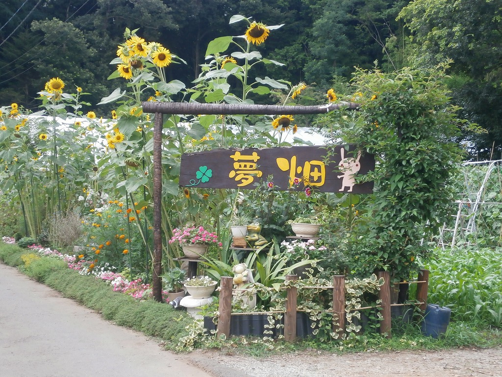

メニュー
ご紹介
こんなことをしています
私たち夢畑は、明るく南側に開けた八王子由木堀之内の丘陵にある夢畑事業所を中心に、9か所約13.000平米の農園を運営しています。収穫した野菜やしいたけ、お花は、多摩草むらの会が運営するレストランや弁当屋に出荷するほかに、道の駅やイベントなどで直売もしています。時に厳しく、時に心地よい自然の力を借りて、からだもこころも健康になれる事業所を目指しています。
特徴・方針
大自然の中での、農園作業や花々の手入れ、大工仕事などを作業課題としています。農産物は、主に法人内の飲食店へ出荷し、一部は道の駅やイベントで販売しています。農園活動に全く経験のない利用希望者が作業に参加できるよう配慮をしています。余暇活動を通し、自宅から一歩外へ出てみたいと思える居場所として、リクレーションタイム、手工芸品作成、夢畑内で自然観察を含め気軽に楽しめる環境を整える事、また、室内でゆっくりとくつろげるための休憩室では、自由にご利用いただけるパソコンも設置しております。
責任者メッセージ
夢畑に来る利用者の皆様は農業未経験者大歓迎です。木々に囲まれた環境の中で四季を感じながら、体を動かし作物を収穫するという経験を積むことは、他では体験できない喜びと気分転換が得られます。また、各個人の得手不得手に広く対応できるために、畑以外にも多くの作業内容もございます。まずは規則正しい生活習慣をつけていきたい、そんなメンバーさんも「夢畑」でお待ちしております。
利用者の声
当初はついていくだけでも精一杯でしたが、慣れる慣れないではなく、また理屈ではなく、“徐々にできるようになっていった”と感じています。
気候風土の中で育て生育する作物の収穫だけではなく、刺激を受け自身を変えていく収穫があります。